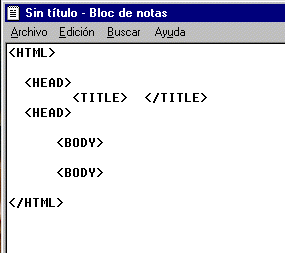

Todo documento elaborado en HTML debe constar de cuatro partes principales:

Todo el contenido de un documento HTML debe encontrarse englobado en el interior de la directiva cerrada <HTML/>...</HTML>. Esto le indica al navegador que estamos empleando que todo lo que se encuentra entre estas dos etiquetas, es código HTML y que debe ser interpretado como tal.
La directiva <HTML/>...</HTML>. contiene en su interior 2 bloques: <HEAD/>...</HEAD>. que es la directiva que señala la cabecera del documento, dentro de esta etiqueta se encuentra <TITLE/>...</TITLE>.que contiene el titulo del documento (este titulo unicamente se vera en la parte superior del navegador) y por ultimo , <BODY/>...</BODY>., que contiene el cuerpo del documento o para entendernos lo que visualizamos en el navegador con el formato correspondiente. En resumen un fichero de HTML sería de la forma:
 Esta cabecera contiene esencialmente información del documento. Entre esta directiva podremos poner otras directivas apartes del titulo como lo son:
Esta cabecera contiene esencialmente información del documento. Entre esta directiva podremos poner otras directivas apartes del titulo como lo son:
<BASE>
Esta directiva indica la localización de los ficheros, gráficos, sonidos, etc... a los que se hace referencia en nuestra página Web. Si no se incluye esta directiva el visor entiende que dichos elementos se encuentran en el mismo lugar donde se encuentra nuestra página Web. Esta etiqueta se utiliza mas que todo cuando el servidor en el que tenemos nuestra pagina no nos da abasto entonces optamos por mandar nustros archivo a otro servidor.
EJEMPLO:
<BASE href ="www.geocities.com/hazeksite/video.AVI">
<ISINDEX>
Indica que el documento es un índice, y por tanto se deberá realizar una búsqueda en él. Presentará un indicador preguntando la palabra clave de la búsqueda.
No se utiliza en documentos normales, sino en documentos realizados con cgi-bin para indicar que les debe pasar una palabra clave para realizar la búsqueda. Presenta dos atributos, PROMPT que indica el texto que aparecerá como inductor de la búsqueda y ACTION que especifica el fichero cgi que trata la consulta, por defecto será el documento actual.
Atributos de la extensión del HTML:
PROMPT (solamente visualizable con Netscape): permite cambiar el texto previo a la entrada de usuario. Si no se incluye, el visor incorpora automáticamente una sentencia de inicio.
HREF: da la URL del archivo donde está la rutina para la respuesta.
ACTION: da la URL base hacia donde se dirige la búsqueda del usuario, es decir, la aplicación que ejecutará la respuesta.
EJEMPLO:
<head>
<isindex prompt="si desea saber algo más sobre el tutorial, ingrese una palabra">
</head>
Esta directiva indica el inicio y final de nuestra pagina Web. Será entre el inicio y el final de esta directiva donde pongamos los contenidos de nuestra página, textos, gráficos, enlaces, etc.... Esta directiva tiene una serie de parámetros opcionales que nos permiten indicar la "apariencia" global del documento :
background= "nombre de fichero grafico"
Indica el nombre de un fichero gráfico que servirá como "fondo" de nuestra página. Si la imagen no rellena todo el fondo del documento, esta sera reproducida tantas veces como sea necesario.Esta etiqueta posee un atributo llamado FIXED el cual hace que el fondo no se mueva junto con las letras
bgcolor = "codigo de color"
Indica un color para el fondo de nuestro documento. Se ignora si se ha usado el parámetro background.
text = "codigo de color"
Indica un color para el texto que incluyamos en nuestro documento. Por defecto es negro.
link = "codigo de color"
Indica el color de los textos que dan acceso a un Hyperenlace. Por defecto es azul.
vlink = "codigo de color"
Indica el color de los textos que dan acceso a un Hyperenlace que ya hemos visitado con nuestro visor. Por defecto es purpura.
Lang = para indicar el idioma del texto.
"en": inglés
"fr": francés
"de": alemán
"es": español
"pt": portugués
"zh": chino
ONMOUSEDOWN = es un atributo definido como un "evento intrínseco". Este evento o suceso está definido por el valor del atributo, que es un pequeño programa script (JavaScript, VBScript o Tcl). En este caso, el suceso ocurre cuando se presiona un botón sobre un elemento. (HTML 4.0).
ONMOUSEOVER = es un atributo definido como un "evento intrínseco". Este evento o suceso está definido por el valor del atributo, que es un pequeño programa script (JavaScript, VBScript o Tcl). En este caso, el suceso ocurre cuando la flecha señalizadora se mueve sobre un elemento. (HTML 4.0).
Son usadas para poner meta-informacion de el documento. Esta directiva indica al visor de Internet las palabras clave y contenido de nuestra página Web. Muchos de los buscadores de páginas Web de Internet (Yahoo, Lycos, etc...) utilizan el contenido de esta directiva para incluir la página en sus bases de datos. La directiva <META> varios parámetros:
EJEMPLO
<META name = "Pagina de David Hdz"content = "Mi pagina personal, HTML y Javascript">
Indica al visor el nombre de la página y sus contenidos principales.
<META NAME="Author" content="David Hdz - TEAM">
Indica el nombre de la persona que elabora la pagina WEB
<META name = "keywords"content = "Completo manual de HTML">
Indica al visor las palabras clave para los buscadores de Internet.
Otro uso de la directiva <META> es la de indicar documentos con "refresco automático". Si se indica una URL se sustituirá el documento por el indicado una vez transcurridos el número de segundos especificados. Si no se incluye ninguna URL se volverá a cargar en el visor el documento en uso transcurridos los segundos indicados. Esto es util para páginas que cambian de contenido con mucha frecuencia o para redireccionar a la persona que visita nuestra pagina Web a una nueva dirección donde se encuentra una versión actualizada de nuestra pagina Web.
EJEMPLO :
<META http-equiv= "refresh"content = "15; URL=http://www.microsoft.com">
Transcurridos 15 segundos se accederá a la pagina Web de Microsoft.
Url= es un atributo agregado por Netscape, y sólo puede visualizarse con este visor. Da la ubicación de un documento dinámico.
Scheme= permite ingresar una forma del contenido del atributo, cuando es el caso de varias opciones.
Dir= para indicar dirección del texto.
EJEMPLO:
<HTML>
<HEAD>
< TITLE> Mi primera pagina </TITLE>
<META NAME="keywords" CONTENT="entretenimieto">
<META NAME="description" CONTENT="Esta es mi primera pagina elaborada en HTML">
<META NAME="Author" content="David Hdz - TEAM">
</HEAD>
<BODY BGCOLOR = navy>
<h1>AQUI PUEDES ESCRIBIR LO QUE TE DE LA GANA</h1>
</HTML>
Copyright© 2002 Hazek Web Site®